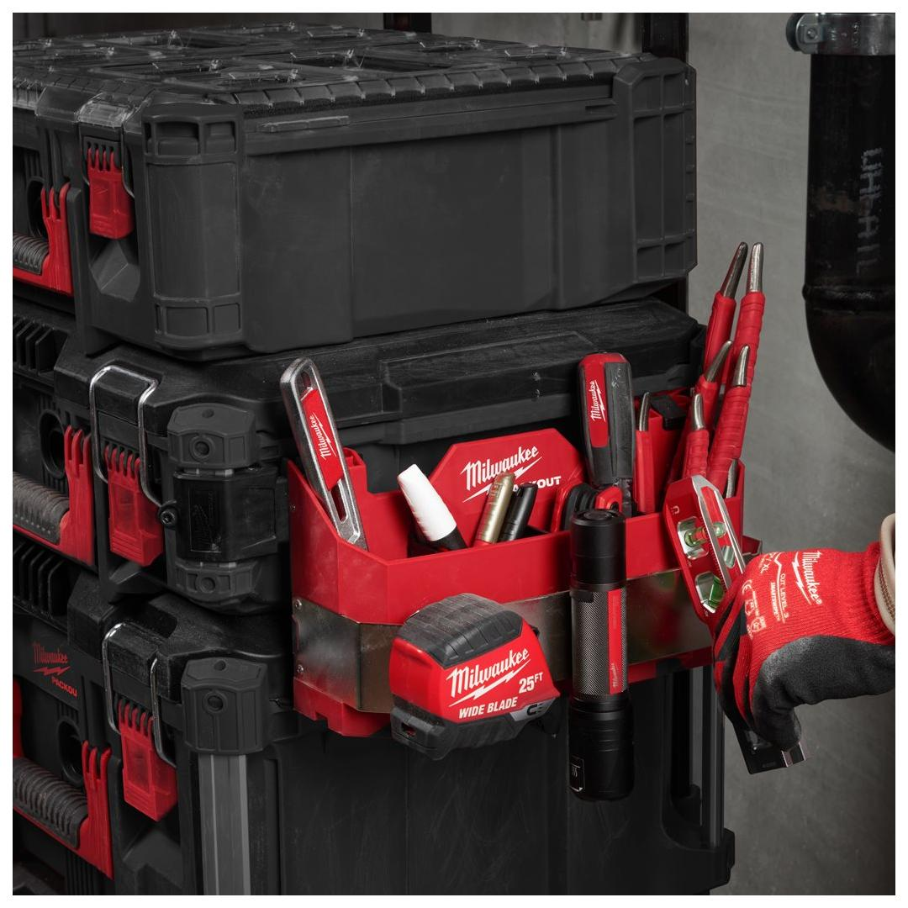
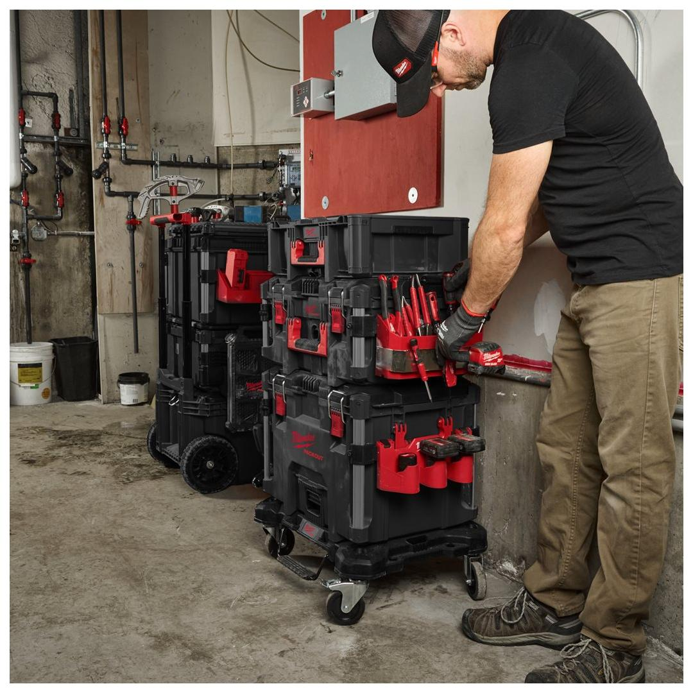
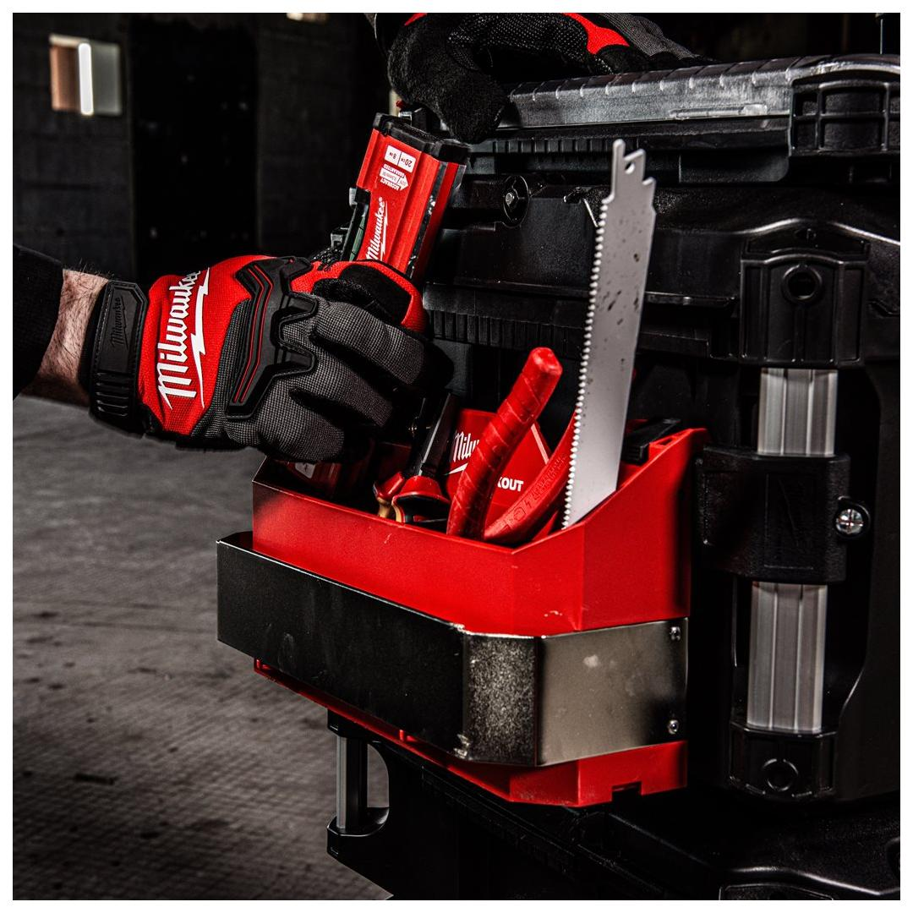
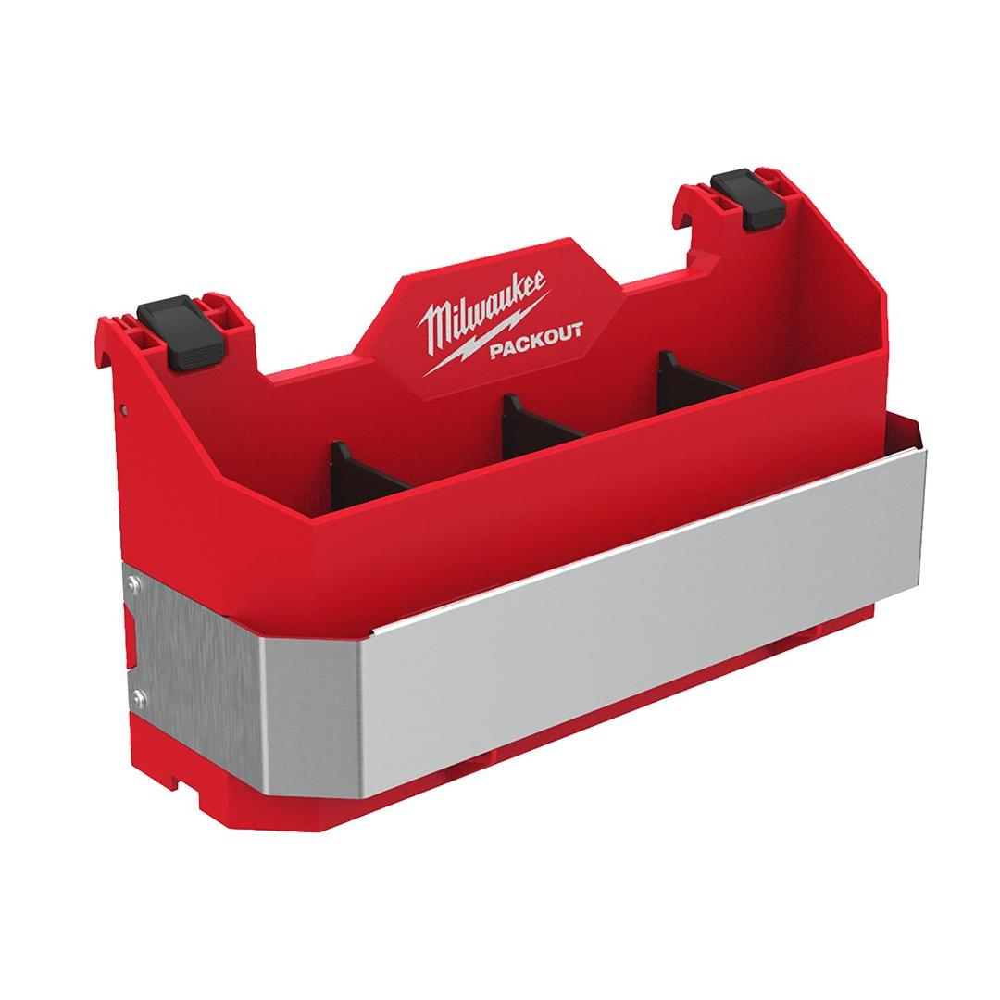
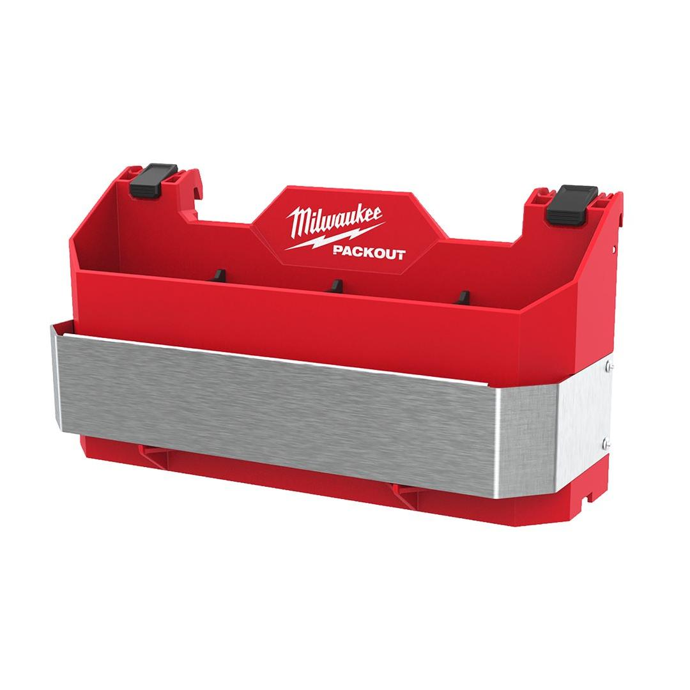

<h1>Milwaukee | PACKOUT Side Mount Hand Tool Holder</h1><p>4932498644</p><div style="display:flex;flex-wrap:wrap;gap:8px"></div><h4>Features</h4><ul><li>Attaches to PACKOUT™ rails in either orientation.</li><li>Impact resistant body.</li><li>Adjustable dividers included for extra organisation.</li><li>Lage belt clip to store multiple tools.</li><li>Fits up to 25 cm long tools during transit.</li><li>Part of the PACKOUT™ modular storage system.</li></ul><h4>Information</h4><table><tr><td>Capacity [kg]</td><td>11</td></tr><tr><td>Dimensions (mm)</td><td>154 x 294 x 120</td></tr><tr><td>MOQ</td><td>1</td></tr><tr><td>Pack quantity</td><td>1</td></tr></table><h4>Weight</h4><table><tr><td>WEB_You tube Milwaukee 1x1 Product Clip</td><td>RJAb7MdOf8Q</td></tr></table>